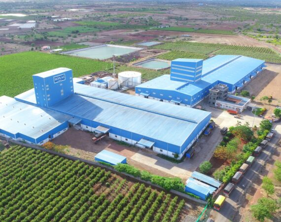

Nimgaon Ketki is a historically rich and culturally vibrant village located in Indapur Taluka of Pune District. The village is situated approximately 12 kilometers from Indapur city and lies on the Indapur–Pune National Highway as well as the Indapur–Baramati road, making it an important regional center.
The village consists of 12 wadis and serves as a hub for nearly 36 surrounding villages. Historically, Nimgaon Ketki was granted to Naik Nimbalkar as “Mukas” for military expenses during earlier regimes. Today, the population of the village is around 20,000, reflecting steady growth and development.
The village derives its name from the abundance of Ketaki (Ketkad / Ghaypat) bushes that once grew in the area. According to local belief, while working in these bushes, villagers discovered a sacred Shivalinga, which gave Nimgaon Ketki its spiritual identity. The village deity is Shri Ketakeshwar Mahadev, who continues to be the central figure of devotion.
Nimgaon Ketki is well equipped with essential facilities such as a Gram Panchayat office, Primary Health Center, schools, post office, markets, and banking services. The village is known for unity among communities and the celebration of festivals with great enthusiasm.


The history of the Shri Ketakeshwar Mahadev Temple is deeply connected with the origin of Nimgaon Ketki village. It is believed that the Shivalinga was discovered naturally while villagers were working in the Ketaki bushes. This divine discovery led to the establishment of the temple and shaped the religious identity of the village.
The temple structure follows Hemadpanthi architectural style and underwent renovation between the years 1859 and 1862. The responsibility of preserving and maintaining the sacred Shivalinga traditionally lies with the Chikhle family, while the Matang community holds the honor of pulling the chariot during the annual Yatra.
The annual Yatra of Shri Ketakeshwar Maharaj is celebrated on Chaitra Shuddha Ekadashi and is renowned across the Panchkroshi region. A grand procession is taken out from a four-storied, nearly thirty-foot-high chariot, attracting thousands of devotees every year.
On the second day of the Yatra, the palkhi and chhabina processions take place, followed by the famous Jangi Nikali wrestling competition on the third day. Renowned wrestlers such as Hind Kesari and Maharashtra Kesari participate in this event, making it a major cultural attraction.
In addition to this, the Suvarnayug Trust organizes a two-day Ganesh Yatra on 25th and 26th December, adding to the spiritual and cultural richness of the village.



The economy of Nimgaon Ketki is primarily based on agriculture, with Nagveli (betel leaf) cultivation being one of the major agricultural activities. Farmers also grow seasonal crops and depend on modern as well as traditional farming practices.
The village hosts an Agricultural Produce Market, along with sheep and goat markets, which play an important role in supporting farmers and traders from nearby villages. Due to its strategic location on the state highway, Nimgaon Ketki has developed into a significant trading center in the region.
In addition to agriculture, various small-scale businesses, retail shops, construction activities, and dairy farming contribute to the local economy. Many villagers are employed in nearby sugar factories and industrial areas, providing additional sources of income.
Cooperative societies, banking facilities, and efficient transportation systems have further strengthened economic growth. With increasing infrastructure and government support, the economic condition of Nimgaon Ketki continues to improve steadily.